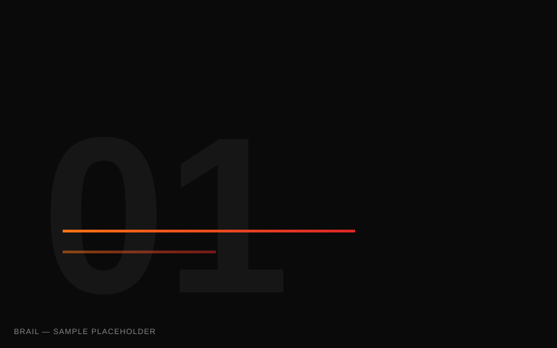
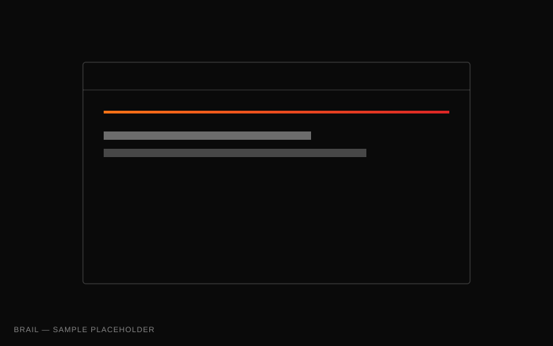
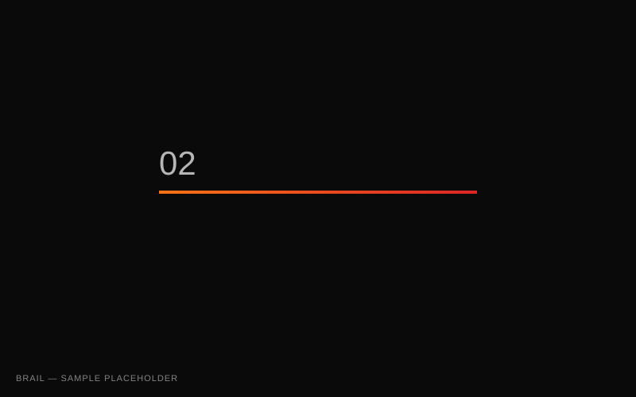
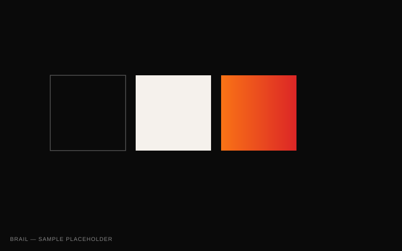
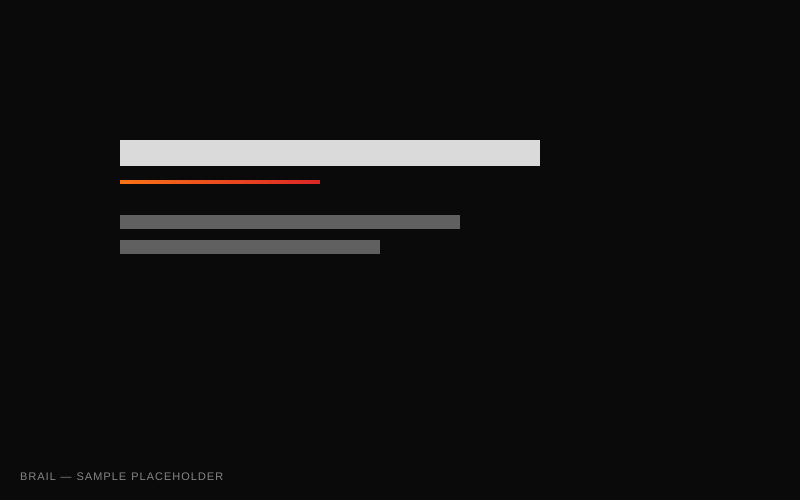
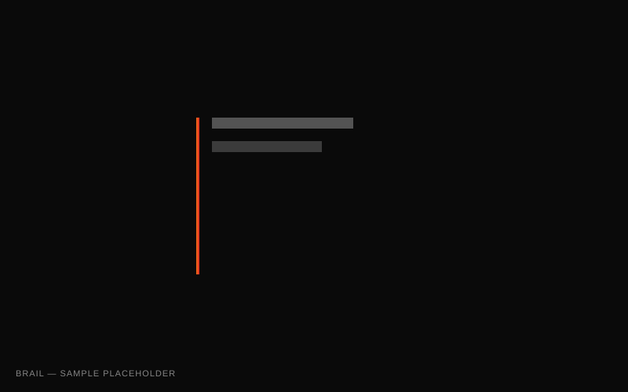

Brail
We drew a clear line between placing a bet and documenting the quality of a market decision, then built the identity around measurable judgement.
- Role
- Brand strategist
Identity designer
- Scope
- Strategy
Visual identity
- Deliverables
- Identity system
Product direction

Brail lets traders make time-bound market calls and build a measurable accuracy record against real exchange prices. That proposition could easily be confused with conventional trading or prediction markets.



Editorial clarity over market noise.
The user—not the transaction—is the centre of the experience. Brail becomes a record of judgement: make a call, accept a time horizon and build evidence.

A restrained foundation, lightweight display typography and clear numerals keep attention on the call, its timing and the evidence that follows.
